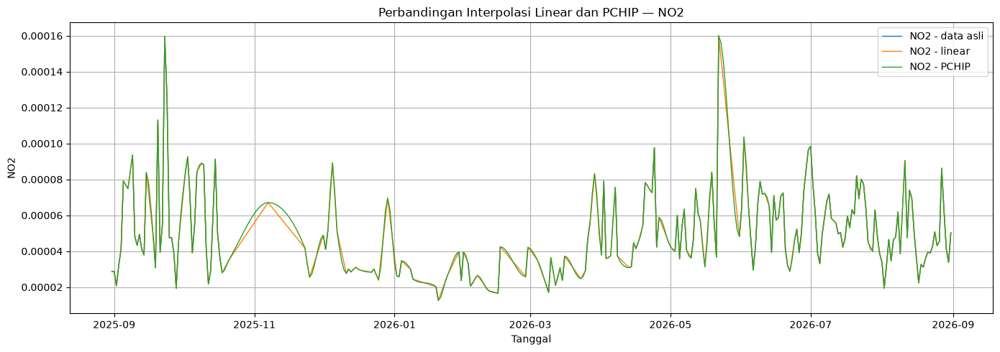
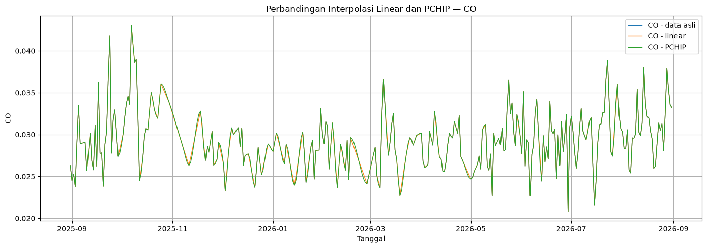
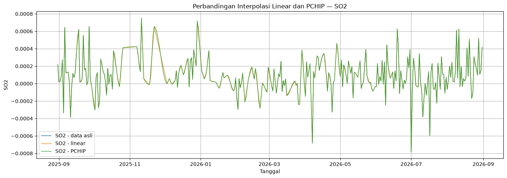

Preprocessing Non-Linear — PCHIP#
Proyek Sains Data (PSD)
Polutan: CO, NO₂, SO₂
Wilayah: Kecamatan Menganti, Kabupaten Gresik
Notebook ini dibuat sebagai eksperimen pembanding terhadap preprocessing linear yang sudah digunakan pada notebook analisis utama.
Alur:
Data time series
↓
Pemeriksaan missing value
↓
Linear interpolation ─────┐
├── dibandingkan
PCHIP interpolation ─────┘
↓
Forward fill / backward fill
↓
Simpan hasil PCHIP
Catatan: file hasil preprocessing linear yang sudah ada tidak diubah. Hasil PCHIP disimpan pada folder terpisah.
# 1. Import library
import numpy as np
import pandas as pd
import matplotlib.pyplot as plt
from pathlib import Path
from scipy.interpolate import PchipInterpolator
pd.set_option("display.max_columns", 100)
pd.set_option("display.float_format", lambda x: f"{x:.8g}")
print("Library siap digunakan.")
Library siap digunakan.
# 2. Konfigurasi path
BASE = Path("..")
PROCESSED_DIR = BASE / "data" / "processed"
PCHIP_DIR = PROCESSED_DIR / "nonlinear"
PCHIP_DIR.mkdir(parents=True, exist_ok=True)
RAW_FILES = {
"NO2": PROCESSED_DIR / "menganti_NO2_daily.csv",
"CO": PROCESSED_DIR / "menganti_CO_daily.csv",
"SO2": PROCESSED_DIR / "menganti_SO2_daily.csv",
}
OUTPUT_FILES = {
"NO2": PCHIP_DIR / "menganti_NO2_pchip.csv",
"CO": PCHIP_DIR / "menganti_CO_pchip.csv",
"SO2": PCHIP_DIR / "menganti_SO2_pchip.csv",
}
print("Input:")
for pol, path in RAW_FILES.items():
print(f"{pol:>3} :", path)
print("\nOutput:")
for pol, path in OUTPUT_FILES.items():
print(f"{pol:>3} :", path)
Input:
NO2 : ..\data\processed\menganti_NO2_daily.csv
CO : ..\data\processed\menganti_CO_daily.csv
SO2 : ..\data\processed\menganti_SO2_daily.csv
Output:
NO2 : ..\data\processed\nonlinear\menganti_NO2_pchip.csv
CO : ..\data\processed\nonlinear\menganti_CO_pchip.csv
SO2 : ..\data\processed\nonlinear\menganti_SO2_pchip.csv
3. Membaca data time series#
Data yang digunakan adalah file time series harian Menganti yang sudah tersedia sebelum ekstraksi fitur.
Pada tahap ini kita tidak mengubah file asli.
# 3.1 Load data dan pemeriksaan awal
ts_data = {}
for pol, path in RAW_FILES.items():
if not path.exists():
raise FileNotFoundError(f"File {pol} tidak ditemukan: {path}")
df = pd.read_csv(path, parse_dates=["date"])
df = df.sort_values("date").reset_index(drop=True)
# Pastikan nilai polutan numerik
df[pol] = pd.to_numeric(df[pol], errors="coerce")
ts_data[pol] = df
print(
f"{pol}: shape={df.shape}, "
f"missing={df[pol].isna().sum()}, "
f"tanggal={df['date'].min().date()} s.d. {df['date'].max().date()}"
)
NO2: shape=(366, 2), missing=151, tanggal=2025-08-31 s.d. 2026-08-31
CO: shape=(366, 2), missing=110, tanggal=2025-08-31 s.d. 2026-08-31
SO2: shape=(366, 2), missing=110, tanggal=2025-08-31 s.d. 2026-08-31
# 3.2 Statistik missing value
missing_summary = pd.DataFrame([
{
"polutan": pol,
"jumlah_data": len(df),
"missing": int(df[pol].isna().sum()),
"missing_%": float(df[pol].isna().mean() * 100),
"valid": int(df[pol].notna().sum()),
}
for pol, df in ts_data.items()
])
display(missing_summary)
| polutan | jumlah_data | missing | missing_% | valid | |
|---|---|---|---|---|---|
| 0 | NO2 | 366 | 151 | 41.256831 | 215 |
| 1 | CO | 366 | 110 | 30.054645 | 256 |
| 2 | SO2 | 366 | 110 | 30.054645 | 256 |
4. Fungsi interpolasi#
Dua metode dibandingkan:
Linear interpolation#
Menghubungkan dua titik yang diketahui dengan garis lurus.
PCHIP#
Piecewise Cubic Hermite Interpolating Polynomial menggunakan polinom kubik per segmen dengan bentuk yang mengikuti titik data. PCHIP digunakan di sini sebagai metode non-linear yang tetap menjaga bentuk data dan menghindari overshoot yang umum pada spline kubik biasa.
Setelah interpolasi pada bagian yang berada di dalam rentang data valid, nilai yang masih kosong pada ujung deret dilengkapi menggunakan ffill() dan bfill().
# 4.1 Fungsi linear
def interpolate_linear(series):
result = series.copy()
result = result.interpolate(method="linear")
result = result.ffill().bfill()
return result
# 4.2 Fungsi PCHIP
def interpolate_pchip(series):
result = series.copy()
valid = result.dropna()
if len(valid) < 2:
raise ValueError("PCHIP membutuhkan minimal dua nilai valid.")
x_valid = valid.index.to_numpy(dtype=float)
y_valid = valid.to_numpy(dtype=float)
interpolator = PchipInterpolator(
x_valid,
y_valid
)
x_all = np.arange(len(result), dtype=float)
missing = result.isna()
# PCHIP hanya digunakan di dalam rentang titik valid
inside = (
missing
& (x_all >= x_valid.min())
& (x_all <= x_valid.max())
)
result.loc[inside] = interpolator(x_all[inside])
# Lengkapi bagian ujung jika masih ada NaN
result = result.ffill().bfill()
return result
# 5. Terapkan linear dan PCHIP
comparison_data = {}
for pol, df in ts_data.items():
original = df[pol].copy()
linear = interpolate_linear(original)
pchip = interpolate_pchip(original)
comparison = pd.DataFrame({
"date": df["date"],
"original": original,
"linear": linear,
"pchip": pchip
})
comparison_data[pol] = comparison
print(f"\n=== {pol} ===")
print("Missing asli :", comparison["original"].isna().sum())
print("Missing linear:", comparison["linear"].isna().sum())
print("Missing PCHIP :", comparison["pchip"].isna().sum())
=== NO2 ===
Missing asli : 151
Missing linear: 0
Missing PCHIP : 0
=== CO ===
Missing asli : 110
Missing linear: 0
Missing PCHIP : 0
=== SO2 ===
Missing asli : 110
Missing linear: 0
Missing PCHIP : 0
# 6. Visualisasi perbandingan
for pol, comparison in comparison_data.items():
plt.figure(figsize=(14, 5))
plt.plot(
comparison["date"],
comparison["original"],
label=f"{pol} - data asli",
linewidth=1
)
plt.plot(
comparison["date"],
comparison["linear"],
label=f"{pol} - linear",
linewidth=1
)
plt.plot(
comparison["date"],
comparison["pchip"],
label=f"{pol} - PCHIP",
linewidth=1
)
plt.title(f"Perbandingan Interpolasi Linear dan PCHIP — {pol}")
plt.xlabel("Tanggal")
plt.ylabel(pol)
plt.legend()
plt.grid(True)
plt.tight_layout()
plt.show()



7. Ringkasan perbandingan#
Nilai yang sudah ada pada data asli tidak diubah oleh kedua metode. Perbedaan utama terdapat pada nilai yang sebelumnya missing.
Tabel berikut memeriksa apakah kedua hasil preprocessing sudah tidak memiliki missing value.
comparison_summary = []
for pol, comparison in comparison_data.items():
original_mask = comparison["original"].notna()
comparison_summary.append({
"polutan": pol,
"data": len(comparison),
"missing_asli": int(comparison["original"].isna().sum()),
"missing_linear": int(comparison["linear"].isna().sum()),
"missing_pchip": int(comparison["pchip"].isna().sum()),
"max_diff_linear_vs_original_valid": float(
(comparison.loc[original_mask, "linear"]
- comparison.loc[original_mask, "original"]).abs().max()
),
"max_diff_pchip_vs_original_valid": float(
(comparison.loc[original_mask, "pchip"]
- comparison.loc[original_mask, "original"]).abs().max()
),
})
comparison_summary = pd.DataFrame(comparison_summary)
display(comparison_summary)
| polutan | data | missing_asli | missing_linear | missing_pchip | max_diff_linear_vs_original_valid | max_diff_pchip_vs_original_valid | |
|---|---|---|---|---|---|---|---|
| 0 | NO2 | 366 | 151 | 0 | 0 | 0 | 0 |
| 1 | CO | 366 | 110 | 0 | 0 | 0 | 0 |
| 2 | SO2 | 366 | 110 | 0 | 0 | 0 | 0 |
8. Simpan hasil preprocessing PCHIP#
File linear yang sudah digunakan pada analisis utama tidak ditimpa.
Hasil PCHIP disimpan pada:
data/processed/nonlinear/
dengan nama:
menganti_NO2_pchip.csvmenganti_CO_pchip.csvmenganti_SO2_pchip.csv
# 8.1 Simpan CSV PCHIP
for pol, comparison in comparison_data.items():
output = comparison[["date", "pchip"]].copy()
output = output.rename(columns={"pchip": pol})
output.to_csv(
OUTPUT_FILES[pol],
index=False
)
print(f"{pol}: {OUTPUT_FILES[pol]}")
NO2: ..\data\processed\nonlinear\menganti_NO2_pchip.csv
CO: ..\data\processed\nonlinear\menganti_CO_pchip.csv
SO2: ..\data\processed\nonlinear\menganti_SO2_pchip.csv
# 8.2 Validasi file keluaran
for pol, path in OUTPUT_FILES.items():
check = pd.read_csv(path, parse_dates=["date"])
print(
f"{pol}: shape={check.shape}, "
f"missing={check[pol].isna().sum()}, "
f"file_exists={path.exists()}"
)
NO2: shape=(366, 2), missing=0, file_exists=True
CO: shape=(366, 2), missing=0, file_exists=True
SO2: shape=(366, 2), missing=0, file_exists=True
9. Langkah berikutnya#
Setelah hasil PCHIP diperiksa, file ini dapat digunakan sebagai input untuk:
ekstraksi 68 fitur TSFEL untuk NO₂, CO, dan SO₂;
penyimpanan fitur versi PCHIP secara terpisah dari fitur linear;
standardisasi;
PCA;
K-Means;
perbandingan Silhouette, Davies-Bouldin, dan Calinski-Harabasz antara preprocessing linear dan PCHIP.
Jangan mengganti file preprocessing linear yang sudah ada.